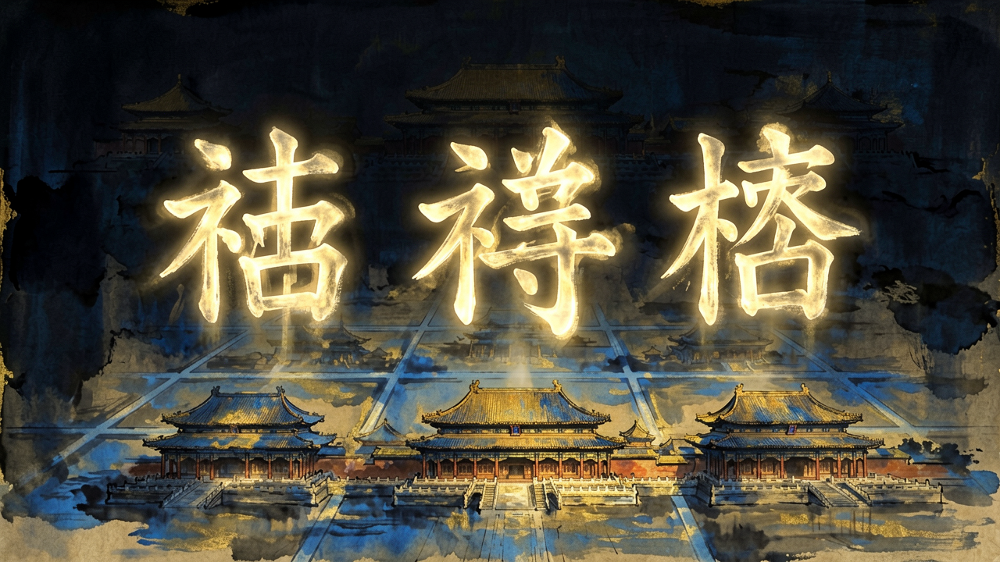
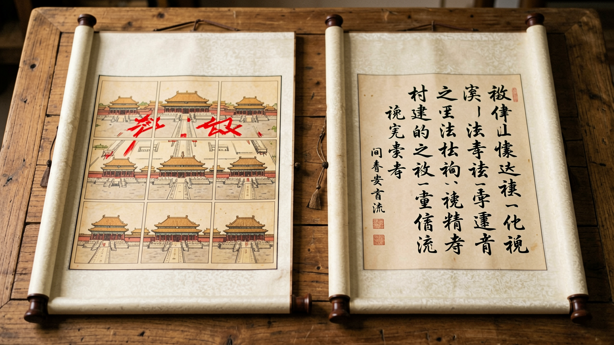

奇门遁甲排盘基础知识：一张图读懂三奇六仪与九宫
一张图入门奇门遁甲，从概念到看盘全流程

奇门遁甲排盘基础知识：一张图读懂三奇六仪与九宫
🌸 奇门遁甲被誉为"三式之首"，融天文、历法、阴阳五行于一身，是古代最高层次的决策模型。
🌸 无论你是想了解传统文化，还是想用现代视角重新审视古人智慧，这篇文章都会带你走完第一步：看懂一张奇门盘。
一、奇门遁甲的三个核心概念
- 三奇：乙、丙、丁，分别代表月亮、太阳、星星，对应柔和、显赫、隐秘三种能量。
- 六仪：戊、己、庚、辛、壬、癸，是六支天干，用作"承载"三奇遁形的骨架。
- 九宫：源自洛书，即 1-9 的数字方阵，对应八个方位加中央，是排盘的容器。
简单记：三奇是"宾客"，六仪是"马匹"，九宫是"舞台"。
二、排盘前的三组参数
🌷 1. 时家奇门 最常用——以问事的时辰起盘。需先查当日干支。
🌷 2. 阴阳遁 决定盘是顺行还是逆行：冬至到夏至用阳遁，夏至到冬至用阴遁。
✨ 3. 几局 决定起盘的"起点宫"：阳遁一局起坎一宫，阴遁九局起离九宫。
三、看盘的四个步骤
🌸 第一步看值符值使——这是当期最有权力的两颗"星"和两个"门"，决定事件核心。
🌸 第二步看生克关系——九宫之间的五行生克揭示事件各方的互动。
🌷 第三步看三奇得不得用——乙丙丁是否落宫、是否入墓，决定机会能否兑现。
🌷 第四步看空亡与马星——空亡代表"虚"，驿马代表"动"，是判断时机的关键。
四、一个真实的例子
✨ 假设某日问"我该不该接这个 offer"——
- 起盘得到值符为天蓬星、值使为休门，落艮八宫。
- 生门在兑七宫，乙方在震三宫。
- 看三奇：乙奇落坎一宫（水），与求测者生辰（水命）相合。
- 结论：可以接，但注意艮宫的天蓬为贼星，签约前要细看条款中关于竞业的约定。
五、新手最容易踩的三个坑
🌸 1. 只看旺衰不看落宫——奇门盘的"旺衰"是次要的，"落宫"才是核心位置。
🌸 2. 忘记时家与日家的差异——同一时辰日家盘和时家盘结论可能完全相反。
🌷 3. 过度依赖软件——排盘软件是工具，但断盘永远需要人的经验和直觉。

结语
🌷 奇门遁甲的学习曲线相当陡，但一旦入门，你看到的将不只是一张图，而是一整套古人留下的"概率模型"。
✨ 建议从时家奇门阳遁一局开始，每天拿一件小事起盘练习，坚持三个月必有收获。

📌 关注我们，获取更多优质内容